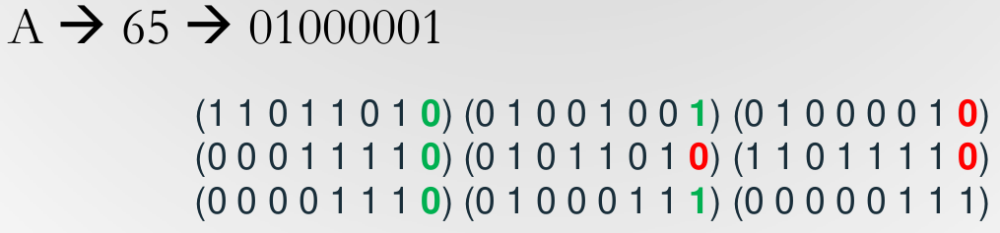
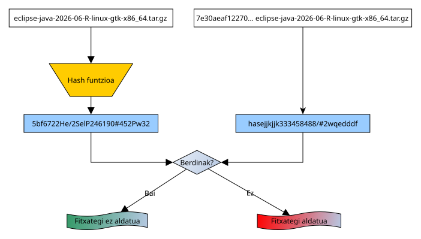
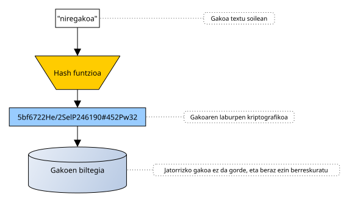
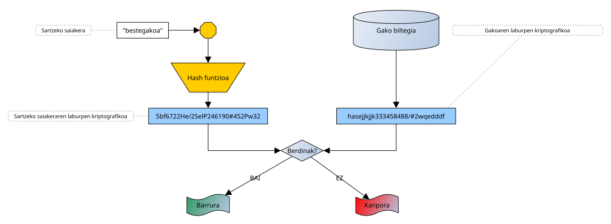
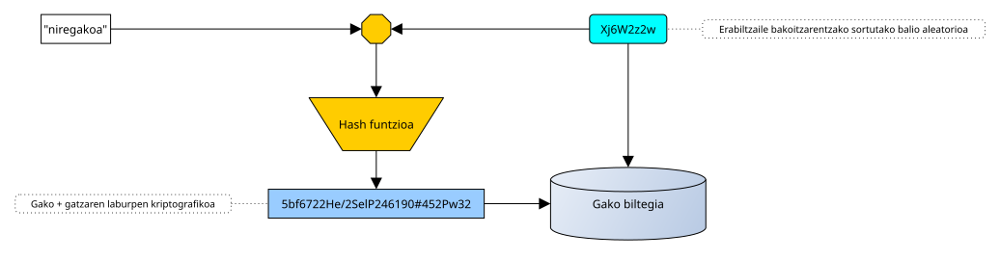
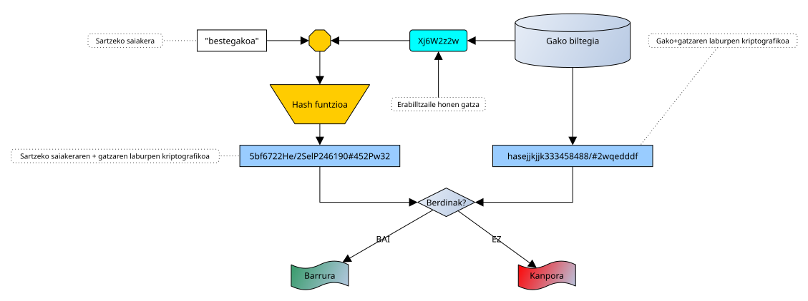

Zifraketa sarrera, esteganografia, laburpen algoritmoak
Mikel Egaña Aranguren
Zifraketa sarrera, esteganografia, laburpen algoritmoak
- Zifraketa sarrera
- Esteganografia
- Laburpen algoritmoak
Zifraketa sarrera
"cripto": sekretua; "graphos": idazkera
Segurtasun-mekanismo oso zaharra
Hau bermatzen du: Konfidentzialtasuna, Osotasuna, Kautotzea, (Zapuztezintasuna)
Zifraketa sarrera
Kriptoanalisia: zifratutako mezuak deszifratzeko teknikak
Kriptologia: Kriptografia + Kriptoanalisia
Kriptosistema
Kriptosistema: DK ( EK ( M ) ) = M
- M: zifratugabeko mezu guztiak
- C: zifratutako mezu guztiak (kriptogramak)
- K: posible diren gakoen multzoa
- E: Enkriptazio algoritmoa
- D: Desenkriptazio algoritmoa
Kriptosistemak
Simetrikoak edo gako pribatuak: Gako bat enkriptatzeko eta desenkriptatzeko
Asimetrikoak edo gako publikoak: Gako bat enkriptatzeko eta beste bat desenkriptatzeko (Batek enkriptatzen duena, besteak desenkriptatzen du)
Zifraketa sarrera
Kriptografia: informazioa zifratzea
Esteganografia: informazioa ezkutatzea
Hash algoritmoak: informazioa laburtzea
Esteganografia
"steganos": ezkutua; "graphos": idazkera
Informazioa ezkutatu, gakoa ezagutzen ez duenak "ikusi" ezin dezan
Gakoa ez badakizu, agian ez dirudi ezkutatutako informaziorik egunik
Kriptografiaren aitzindaria
Esteganografia (historia)
Histaiaeo (Mileto-ko gobernatzailea) aliatuak bilatzen zituen Dario I errege persiarraren aurka matxinatzeko (K. a. V. mendea)
Inork detektatu ez zitzakeen mezuak bidali behar zituen
- Mezulariei ilea moztu
- Buruan mezua grabatu
- Itxaron ilea berriro hazteko, eta helburura bidali
- Helburuan berriro ilea moztu eta mezua irakurri
Esteganografia modernoa
Informazio sentikorra ontzi-fitxategian sartzea
- Bit-en ordezkapena
- Bitak amaieran txertatzea, EOF (End Of File) markaren ondoren
- "Ad-hoc" ontzi-fitxategiaren sorrera ezkutatu beharreko informazioaren arabera
Bit-en ordezkapena
Informazioaren ezkutapena multimedia fitxategietan (normalean irudiak)
BMP formatuan, RGB-ko pixel bakoitza 3 byte dira
LSB (Less Significant Bit): byte bakoitzaren azken bit-a aldatzea ia ikusezina da
Bit-en ordezkapena
Adibidez, testua ezkutatzeko, nahi den karakterearen ASCII kodea txertatzen dugu

Esteganografia modernoa
- Normalean pasahitzak erabiltzen dituzten programak
- Nola hobetu sistemaren sendoera?
- Informazioa zifratzea txertatu aurretik (Kriptografia + esteganografia)
Esteganografia modernoa: arazoak
- Ontzi-fitxategia aldatzen bada, informazioa galdu egin daiteke (adib. JPEG; BMP; JPEG)
- Ez du Kautotzea edo Osotasuna bermatzen (baina Konfidentzialtasuna bai)
Laburpen algoritmoak
Jatorrizko edukia adierazten duen kriptograma sortzen dute:
- Tamaina konstantea, jatorrizko edukiaren arabera independentea
- Jatorrizko eduki osoa adierazten du
- Edukia apur bat aldatzen bada guztiz aldatzen da
- Edukia berdina denean, beti sortzen du bera
Hash funtzioak
- Ez dute alderantzizkorik (one-way function): ezin da edukia kriptogramatik lortu
- Ezin da deszifratu, ez delako zifratzen (laburtzen baizik)
Laburpen algoritmoen funtzioak
Informazioaren osotasuna ziurtatu
Pasahitzak gorde
Datu edo fitxategien identifikatzailea
Lan froga Bitcoin-en
Osotasuna sinadura digitalean
Informazioaren osotasuna ziurtatu

[sha512sum]
Pasahitzak gorde

Pasahitzak gorde: identifikazioa

Pasahitzak gorde: arazoak
Pertsona guztiek pasahitz bera badute, hash bera dute
Hash-ak aurrez kalkula daitezke pasahitz-eremu osoaren bidez
Pasahitzak gorde: arazoak
Soluzioa: "gatza" (Salt), edo hazia erabiltzea

Pasahitzak gorde: arazoak
Identifikazioa gatza erabiliz

Pasahitzak gorde: arazoak
Gatzaren erabileraren abantailak:
- Gako berdinak aldi bakoitzean kodifikazio desberdinarekin agertzen dira
- Indarrezko erasoak zailagoak dira
Pasahitzak gorde: inplementazioa
Linux:
- Kokapena: /etc/shadow
- Irakurri: sudo cat /etc/shadow
- Formatua: user:$Algoritmoa$gatza$Laburpena:A:B:C:D:E:F:
Pasahitzak gorde: inplementazioa
Linux formatua:
- Algoritmoa: 1: MD5; 2: Blowfish; 3: NT; 5: SHA-256; 6: SHA-512
- Gatza: ausazko kate bat gakoak eratortzeko
Pasahitzak gorde: inplementazioa
Linux formatua:
- A: pasahitza aldatu gabe pasa den egunak (01/01/1970-tik)
- B: pasahitza aldatu ahal izateko egunak
- C: pasahitza aldatu gabe egon daitekeen gehienezko egunak
Pasahitzak gorde: inplementazioa
Linux formatua:
- D: erabiltzaileari pasahitza aldatu beharreko egunen aurretiko abisua
- E: pasahitza iraungi ondoren kontua desaktibatu arteko egunak
- F: kontua desaktibatu arteko egunak (01/01/1970-tik)
Datu edo fitxategien identifikatzailea
Git bertsio-kontrol sistema identifikatzeko:
- Commits
- Blobs (Binary Large Objects)
- Zuhaitzak: direktorioak, blob-ak eta beste direktorioak aipatzen dituztenak
[git log]
Datu edo fitxategien identifikatzailea
Git bertsio-kontrol sistema:
- Edukia de-duplikatzeko
- Aldaketak detektatzeko
- Osotasuna aldaketa maltzurren aurka
Datu edo fitxategien identifikatzailea
BitTorrent-en:
- Fitxategiak identifikatzeko Magnet links: URN-ak (URI-ak), baliabidea bere edukiarekin identifikatzen ditu, ez lokalizazioarekin (Ez URL-ak!)
- Deskargatutako fitxategien osotasuna egiaztatzeko
- Fitxategiak duten peers aurkitzeko (DHT, Distributed Hash Table)
Datu edo fitxategien identifikatzailea
Programazio-hizkuntza datu-egituretan:
- Bilaketa azkarra
- Osotasun egiaztapena
- Bakartasunaren kontrola
Datu edo fitxategien identifikatzailea
Programazio-hizkuntza datu-egituretan:
- Python: Dicts, Sets
- Java: HashMap, HashSet
- JavaScript: Object, Map
Ezagunenak diren laburpen algoritmoak
MD5
SHA-3
RIPEMD
MD5
Kriptografikoki hautsia da, baina oraindik erabiltzen da, batez ere osotasunerako eta sistema heredatuen ez-kritikoetan
128 biteko hash-ak
SHA-3
SHA-3 (Secure Hash Algorithm 3) NIST (National Institute for Standards and Technology) erakundeak garatua
SHA-0..2 MD5-an oinarritu ziren (hautsita), SHA-3 egitura desberdina da
Sinadura digitalak: DSA (Digital Signature Algorithm) eta ECDSA (Elliptic Curve Digital Signature Algorithm)
SSL/TLS ziurtagiriak: Open SSL
Kriptomonetak: Ethereum
RIPEMD
RIPEMD (RACE Integrity Primitives Evaluation Message Digest): SHA eta MD5 alternatiba
Oso segurua
SHA-256-rekin batera erabiltzen da Bitcoin helbideak sortzeko gako publikoetatik
Laburpen algoritmoen aurkako erasoak
- Kolisioak: bi datu multzo desberdinek laburpen berdina sortzen dute
- Indarrezko erasoen bidez (adib. urtebetetzearen paradoxa) edo teknika sofistikatuagoak shattered SHA1-en aurka bezala
- Osotasuna: dokumentu maltzurraren ordezkapena dokumentu berdinarekin, hash berdinarekin
- TLS/SSL ziurtagiriak: zerbitzu baten identitatea faltsutzea ziurtagiri faltsu batez
Checksums
Checksum bat fitxategi edo datu-bloke baten laburpen motza da
- Errore akzidentalak detektatzeko erabiltzen da
- Oso erabilgarria transferentzietan, deskargatan edo fitxategien balidazioan
- Adibideak: CRC32
Checksums eta hash-ak
Biak tamaina finkoko irteera sortzen dute, baina ez dute helburu bera
- Checksum: nahigabeko aldaketak detektatzea
- Hash kriptografikoa: osotasuna babestea erasotzaile baten aurka
- Checksum-ak ez daude diseinatuta kolisioei edo erasoei aurre egiteko
- Checksum-ek kalkulu sinple eta azkarra dute
Error Correcting Codes (ECC)
Ez dira hash-ak edo checksums-ak
- Transferentzia-erroreak detektatu eta konpontzeko erabiltzen dira
- Adibideak: parity bits, Hamming, Reed-Solomon
- Haien helburua zarata edo interferentziaren ondorioz hondatutako datuak berreskuratzea da
- Hash-ek aldaketak identifikatzen dituzte; ECC-ek informazio hondatua berreskuratzen saiatzen dira
Error Correcting Codes (ECC)
Ez dira hash-ak edo checksums-ak
- Hash edo checksums baino baliabide konputazional gehiago behar dituzte
- Erredundantzia informazioa dute erroreak konpontzeko
- Komunikazio-ezergokortasun handiko inguruneetan transmititzeko